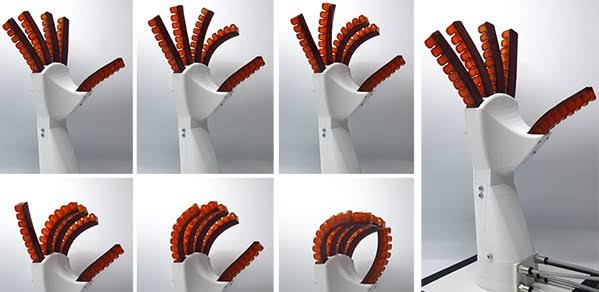

Robótica blanda (Soft Robotics)
La robótica blanda construye máquinas con materiales elásticosUtiliza silicona, caucho, geles. Imita estructuras biológicas. Pulpos, medusas, lombrices inspiran sus diseños. Carece de articulaciones rígidas. Posee alta adaptabilidad geométrica. Se dobla, estira, comprime fácilmente. Garantiza seguridad absoluta. Manipula objetos frágiles sin dañarlos. Interactúa con tejidos humanos de forma segura. Funciona mediante sistemas neumáticos. Aire, líquidos, estímulos térmicos generan movimiento.Desarrolla prótesis adaptables. Diseña herramientas quirúrgicas mínimamente invasivas. Fabrica pinzas industriales para alimentos delicados. Crea robots de rescate para espacios estrechos.
